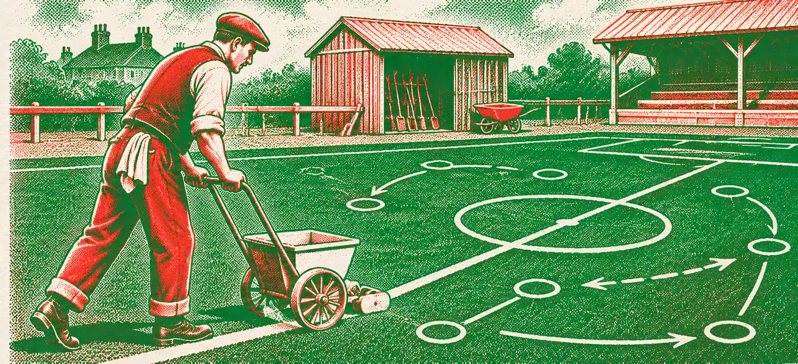

How it works
The method, the rules the arms can never break, and every bug that produced plausible wrong numbers.

Each week, in order
Read Kalshi's prices
Every EPL and La Liga market Kalshi lists: match result (including the NO side of each team), goals totals and both teams to score. Prices are read, never traded.
Find fair value
The sharp prices (Pinnacle plus the Betfair, Smarkets and Matchbook exchanges), with the margin removed. The lab's own Dixon–Coles model prices only what they don't cover, and arm C uses it alone.
Compare, after fees
Fair probability minus Kalshi's ask, net of Kalshi's fee. Most markets come out negative: Kalshi is usually the worse price.
Stake by each arm's rule
Three runs a week. An arm bets only when the gap clears its bar, and only before kickoff. Thresholds are never lowered to make an arm bet more.
Capture the closing line
A snapshot just before each kickoff records the final price, which is what every bet is scored against.
Settle and publish
Results grade every bet on Tuesday, the ledger is committed to GitHub, and this site is rebuilt from that history alone.
Terms used on this site
- Closing-line value (CLV)
- How much better the price paid was than the final price before kickoff. Consistently positive CLV is the best evidence of a real edge.
- CLV mid
- CLV measured in probability points against the midpoint of the closing bid and ask. Fair to arms that pay the ask and to the one that buys at the bid.
- Quarter-Kelly
- A quarter of the stake the Kelly formula suggests for the measured edge. Bigger edge, bigger bet, with a safety margin for being wrong.
- De-vigged
- A bookmaker's prices with its margin removed, so the probabilities add up to 100%.
- Maker order
- A limit order that waits on the book for someone to trade with it, instead of taking the price on offer. Kalshi charges makers a quarter of the taker fee.
- Voided
- A bet cancelled and refunded because a bug made its edge unreal. Voided bets are left out of every figure.
Data integrity
8 bugs found and fixed so far. Each produced plausible wrong numbers rather than an error. Every figure on this site is post-fix and post-void.
Cross-league model pricing
collect_model_probs priced every fixture with the last league's model, manufacturing a ~35-point fake edge (commit 50f4e16). Invisible while only one league had fixtures in the betting window.
Kalshi rules-text template change
Kalshi changed its market-description wording with no notice, breaking team-name parsing for every market. The pipeline reported “no in-scope markets”, indistinguishable from an outage. Fixed by anchoring the fixture parse on “the X vs Y professional”.
Totals line mismatch: 24 bets voided
Once parsing was fixed, totals markets flowed for the first time and exposed that opportunities were matched by market and selection only, never the goals line: a Kalshi Over-5.5 ask was compared against the Over-2.5 fair probability. The 24 bets placed on that phantom edge (9 for A, 9 for B, 6 for C) were voided and refunded, and are excluded from every figure here.
NO-side fill pricing
ask_ladder only ever built the YES side of the order book, so every BTTS-NO and totals-UNDER bet had its fill walked from the opposite contract. Arm A and B's one settled bet (Valencia–Barcelona BTTS NO) and arm C's five NO-side settled bets keep the wrong booked price and P&L. The decision to bet still cleared the threshold at the true price.
Promoted clubs pinned at the model's bounds: 11 bets voided
With the 2026/27 file published, just-promoted clubs were fitted on about three matches and the optimiser ran their parameters to its ±3 box (Hull defence −3.000, Coventry attack −3.000), pricing Chelsea to score 0.09 goals at home. Fixed by shrinking thin-sample clubs toward a promoted-club prior; arm C's 11 bets on it were voided.
Closing prices mixed across goals lines
Closing prices were keyed without the goals line, so each fixture's six totals contracts collided and every totals bet took another line's close. Fixed at the source; six unrecoverable closes on arm C were cleared rather than left to distort CLV.
Current season could silently drop out
A runner DNS failure showed that an unreachable data source could leave the model refitting as if 2026/27 had not started while the run reported success. It now falls back to the cached season or refuses to build.
In-play bets: 12 voided
Kalshi's occurrence time is when a market resolves (kickoff +3h, or +4h on totals and BTTS), and it had been read as kickoff. The Sunday stake run bet matches already underway: 12 bets, including arms A and B's only settled win (Valencia–Barcelona, 46 minutes in). All 12 were voided and 29 mid-match closing prices cleared. The fix derives kickoff correctly and cross-checks it against the bookmakers'. Maximum-divergence readings before this date include live markets and overstate how often an edge appeared.